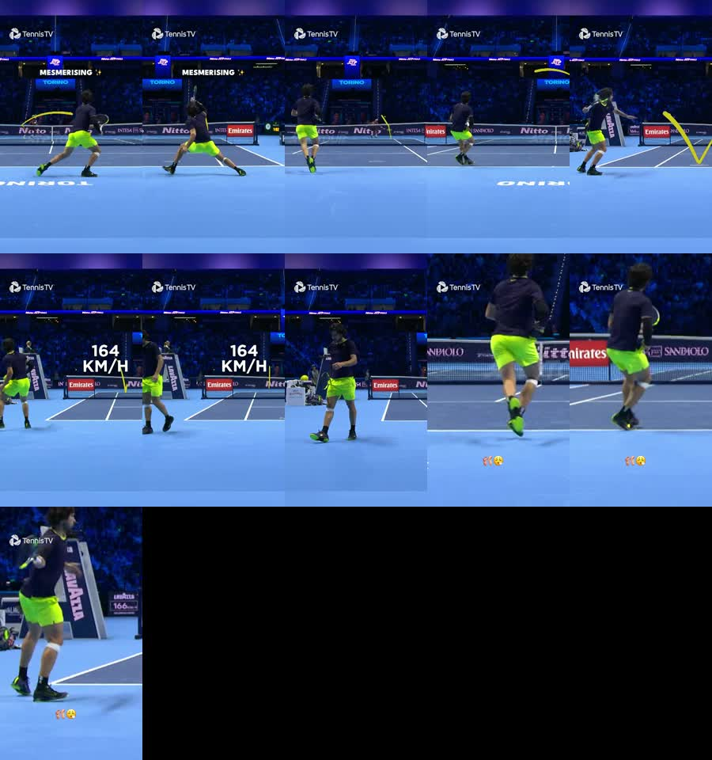
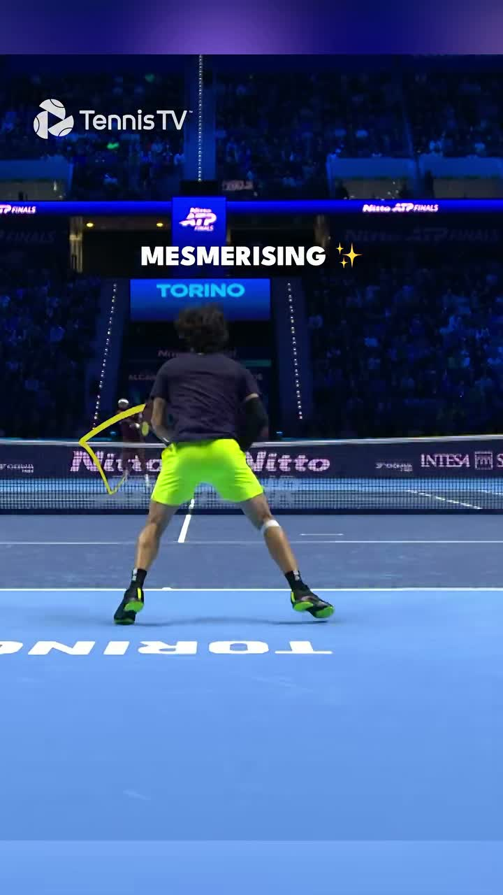
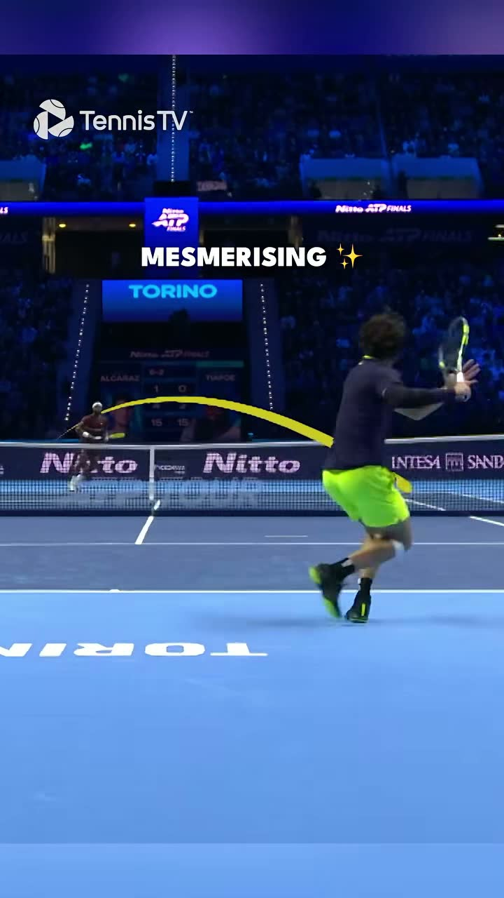

Watch the reel here — original and slow motion
Downloaded from the Tennis TV reel: 720×1280, 25 fps, 11.4 seconds. One forehand sequence from a wide court-level angle: defensive position, open-stance load, full uncoil, the broadcaster's ball-trajectory and “164 KM/H” graphics, then the celebration. Both versions play inline and can be downloaded.

7 takeaways — forehand only
The preparation is early, short — and the left hand stays on the throat
Mouratoglou: Alcaraz “starts his forehand motion very early… well before the ball touches the ground. His preparation is short and simple.” Konov adds the detail that makes the coil: the left hand stays on the throat “until he reaches or even passes the line of his right shoulder,” building extra trunk tension before release. [Tennis.com 2022; Top Tennis Training]
The grip: bevel 4 — “western” is a label dispute, not a different grip
The only source that measures bevels from photos (TennisCraft) finds base index knuckle and heel pad both on bevel 4 — standard/strong semi-western — and explicitly rejects bevel 5. Commentators who say “close to western” (Pat Cash) are describing the same strong semi-western position; GripSnake notes it may drift deeper on clay. Full dispute table below. [TennisCraft 2022; GripSnake 2025; Tennishead 2025]
Elbow-led backswing, tip down-court, then a deep drop into lag
Konov: he “leads the backswing with his elbow,” racket tip facing down the court, butt cap to the back fence — a position built to flip into lag. Tennisresor (citing Fault Tolerant Tennis) notes he “lets the racket fall very deep — significantly lower than, for example, Djokovic,” and arrives on time only because the start is early. Mouratoglou: “his wrist loosens up and drops” before contact, “which helps him get under the ball and create crazy spin.” [Top Tennis Training; Tennisresor 2025; Tennis.com]
Straight arm, contact far in front — an exception to his grip's usual pattern
Mouratoglou: he “extends his right arm long before he hits and keeps it extended until the end of his motion.” That matters because the general literature (Reid 2013) says western-grip players typically contact with more elbow bend (~100° vs ~130° for eastern). A straight arm on a strong semi-western grip is the exception, not the rule — and coaches explicitly do not offer it as club advice. [Tennis.com 2022; Reid et al. 2013]
The chain fires late and in order — but those numbers are elite-general
Landlinger et al. measured the proximal-to-distal sequence hip → shoulder → elbow → wrist → racket head, with elite pelvis rotation peaking 75 ms before impact, trunk 57 ms before, and shoulder internal rotation peaking 24 ms after impact; max hip–shoulder separation averaged −27°. No equivalent measurement of Alcaraz exists — his long left-hand hold is a qualitative coil maximiser, not a measured X-factor. [Landlinger et al. 2010]
His verified numbers: heavier than tour average on speed AND spin
ATP/TDI tracking, 2024 season: topspin forehand averaged 78 mph and 3,208 rpm against tour averages of 75 mph and 2,708 rpm; forehand Shot Quality 8.62, second only to Sinner's 8.80. Surface spin averages over three years: 3,177 rpm outdoor hard, 3,056 clay, 3,055 indoor hard. These are primary tracking figures, verified live during this research. [ATP Insights 2024; ATP Beyond The Numbers]
The finish is a wiper by default — the lasso is a tool, not the trademark
Tennisresor (citing playtennis.sg): he “typically finishes with the racket around or just below shoulder height on the left side… a classic 'wiper' finish”; the lasso/buggy-whip appears situationally — defensive, late, heavy topspin. Social graphics that file him purely under “THE LASSO” contradict the more detailed analysis. [Tennisresor 2025; Dominating Tennis]
There is no verified Alcaraz maximum forehand speed
Published “max” claims conflict — 102, 106, 109 and 111 mph — and none carries primary tracking methodology. The reel's “164 KM/H” (≈102 mph) is a broadcaster graphic inside an edit. Present any of these as his measured maximum and you are repeating an unsourced claim. Full list in Could not verify. [ESPN; AP; Tennis TV graphic]
One forehand, eight phases
The phases follow the sequence the published analyses describe — in stroke order, not as a frame-by-frame timeline of this clip (an 11-second edit cannot supply one). Tap a phase for what the sources say and the cue worth stealing.
| Phase | What the sources describe | Evidence level |
|---|---|---|
| Grip | Strong semi-western: index knuckle and heel pad on bevel 4 (photo analysis); “close to western” in commentary; possible drift deeper on clay. | Photo bevel analysis · commentator disagreement |
| Unit turn & prep | Starts before the ball bounces; short and simple; left hand on the throat until at/past the right-shoulder line for extra coil. | Coaching consensus (no angle/timing measured) |
| Backswing & drop | Elbow-led; racket tip down-court, butt cap to the back fence; blade ~45°; drop deeper than Djokovic's, on time because of the early start. | Coaching analysis (secondary syntheses) |
| Lag | Racket flips from tip-down-court into lag; wrist loosens and drops before contact. Elite wrist extension peaks at 88.7° ~55 ms before impact — general data. | Coaching consensus · peer-reviewed (general) |
| Kinetic chain | Proximal-to-distal: hip → shoulder → elbow → wrist → racket. Elite separation ~27°; pelvis/trunk peaks at −75/−57 ms; shoulder rotation peaks after impact. | Peer-reviewed (general elite, not Alcaraz) |
| Contact | Arm extended well before contact and kept extended; contact far in front, often on the rise; Madrid 2023 rally contact height 1.08 m (all groundstrokes). | Coaching consensus · ATP tracking (partial) |
| Finish | Windshield-wiper around/just below the opposite shoulder as default; lasso/buggy-whip situational (defensive, late, heavy spin). | Coaching analysis (one traced sample wraps to the neck) |
| Airborne forehand | Observed leaving the ground on wide forehands; lift is the accumulated result of leg drive + rotation, not a deliberate jump. | Observed qualitatively · general expert mechanism |
Vocabulary note: “pat the dog” (strings-down drop) vs “on-edge” drop is not settled for Alcaraz — the on-edge claim appears only in a Talk Tennis forum thread, which is forum-level evidence. Reputable sources describe elbow-lead + tip-down-court + deep drop without resolving the strings question, so this page doesn't either.
The grip: one bevel measurement, several labels
Ask five sources what grip Alcaraz uses and you get “semi-western,” “strong semi-western,” “semi-western to western” and “pretty close to western.” Only one of them actually measured anything. The disagreement is in the wording; the hand placement the evidence supports is the same.
| Source | Claim | Basis |
|---|---|---|
| TennisCraft, “Alcaraz Forehand Grip, Illustrated” (2022) | Standard semi-western — index knuckle on bevel 4, heel pad on bevel 4; explicitly rejects western: the knuckle “does not cross the threshold into Bevel 5” | Photo bevel outlines — Andalucia Open 2021 (mid-swing), Australian Open 2022 (follow-through) |
| GripSnake (2025) | “Strong semi-western on bevel 4” (both landmarks); “may at times even drift toward a full western grip on clay, but bevel 4 remains the anchor” | Assertion on a commercial grip-trainer site; no photo measurement shown |
| Dominating Tennis synthesis (updated 2026) | “His grip is disputed: Yandell puts it between Federer's and Nadal's, one analyst calls it western, coaching blogs say semi-western. We say semi-western to western.” | Secondary attribution — the Yandell primary source was not located or verified in this research |
| Pat Cash on BBC, via Tennishead (2025) | “Normally pretty close to a Western grip”; on grass returns he stands in a continental grip and blocks — the grip changes by surface and shot | Live commentator impression; no bevel measurement |
| Mouratoglou, via ESPN (2023) | Alcaraz and Nadal share “the grip, the takeback, how they engage their legs, their racket acceleration at impact and their racket path” | Coach comparison; no bevel specified |
The numbers that actually exist for his forehand
No biomechanics lab has published on Alcaraz. What exists is tour tracking — ATP / Tennis Data Innovations (TDI) / TennisViz via Infosys — and it is genuinely primary: measured from match play, not estimated. The three headline figures below were verified live on ATP's site during this research.
Average topspin forehand speed, 2024 season — tour average 75 mph (“+3 mph”). ATP Insights (TDI), 2024-09-13. Verified live.
Average forehand spin, 2024 season — tour average 2,708 rpm. Same ATP Insights release. Verified live. Single-match average reached 3,316 rpm vs Ruud (Beijing 2023 QF).
Forehand Shot Quality, 2024 — 2nd on tour (Sinner 8.80, Djokovic 8.54). TDI/TennisViz composite of speed, spin, depth, width and impact on the opponent. Verified live.
| Metric | Value | Context | Source |
|---|---|---|---|
| Forehand spin by surface (3 yrs to Oct 2024) | 3,177 / 3,056 / 3,055 rpm | Outdoor hard / clay / indoor hard — 3 of the top 6 spots in the Top-10 dataset, shared only with Ruud | ATP Beyond The Numbers, 2024-10-30 |
| Single-match spin average | 3,316 rpm | vs Ruud, Beijing 2023 QF (Ruud averaged 3,175 rpm in the same match) | ATP Beyond The Numbers, 2024-10-30 |
| Net clearance, clay forehand | 0.87 m | 2nd among Top-10 leaders, behind Ruud's 0.89 m | ATP Beyond The Numbers, 2024-10-30 |
| Madrid 2023 (6 matches) — avg FH speed | 116 km/h | Opponents averaged 120 km/h — he won the title hitting slower on average than the field he beat | ATP Beyond The Numbers, 2024-04-26 |
| Madrid 2023 — forehand share | 54% | 524 of 967 groundstrokes were forehands | ATP Beyond The Numbers, 2024-04-26 |
| Madrid 2023 — rally contact height | 1.08 m | vs opponents' 1.22 m — all rally groundstrokes, not forehand-only; consistent with taking the ball earlier/on the rise | ATP Beyond The Numbers, 2024-04-26 |
| Queen's 2023 | 73 mph · SQ 8.5 | FH = 58% of groundstrokes (379), 82% in — search-snippet only, full page not opened; treat as secondary | ATP Beyond The Numbers, Jun 2024 |
Forehand hunting: inside-out and the third shot
TennisMajors (2024), citing TennisViz/TDI graphics: inside-out forehand opportunities vs Sinner — China Open 2023: Sinner 19, Alcaraz 10; Indian Wells 2024: Alcaraz 16, Sinner 10. The underlying graphics are images; the counts are as reported in text. Separately, Dominating Tennis cites Simon Rea (Tennis Australia) via The Age: Alcaraz used a forehand as his third shot 79% of the time in 2023 (Djokovic 64%, Sinner 69%) — primary article not opened, so this stays a secondary attribution. No season-long inside-out usage % was verified.
Winners and errors: one tournament only
ACE Tennis Magazine (2026-04-09, source not named): over 7 matches in Melbourne — 129 forehand winners (75% of his groundstroke winners), 256 forehand errors (53% of groundstroke errors), forehand = 56% of rally shots, average 78 mph. Usable only with that attribution. Roland-Garros' official site (via search snippet) credits 65 forehand winners through 4 matches in 2023. Season totals by wing from a primary source: not found.
What a tour-level forehand measures in the lab
These are the reference numbers for the mechanics described above — from Landlinger et al. (2010, 400 Hz Vicon motion capture) and the Reid, Elliott & Crespo (2013) review. They describe elite forehands in general. Attaching any of them to Alcaraz personally would be fabrication; this page never does.
The kinetic chain, segment by segment
Peak linear velocities follow a strict proximal-to-distal order — hip → shoulder → elbow → wrist → racket head. Tap a segment for its measured peak and when it fires relative to impact. All values: Landlinger et al. 2010, elite group.
Peak rotation velocities — elite forehands (Landlinger et al. 2010)
Means: pelvis 540.5 ± 40.5 °/s, trunk 745.0 ± 82.1 °/s, shoulder internal rotation 793.7 ± 83.0 °/s (peaking 24 ms after impact — the authors caution this value is model-dependent), elbow extension 277.5 ± 95.9 °/s. The elite signature is timing, not just size: elite pelvis and trunk peaks arrive later (−75 ms / −57 ms) than high-performance juniors' (−93 ms / −75 ms).
| Variable | Elite benchmark | Source |
|---|---|---|
| Racket-head speed, horizontal | 33.1 ± 2.4 m/s | Landlinger 2010 (cross-court 34.4, down-the-line 31.7); club players measure 21–24 m/s (Reid 2013) |
| Racket-head speed, vertical | 18.7 ± 2.6 m/s | Landlinger 2010 |
| Hip–shoulder separation, max | −27.0 ± 8.9° | Landlinger 2010 (cross −28.7°, DL −25.4°); preparation range 20–30° per Takahashi 1996 via Reid 2013 |
| Alignment at end of backswing | Hips ~90° · Shoulders ~110° | Reid 2013 — rotation from the baseline in the mature forehand |
| Wrist extension (lag proxy), max | 88.7 ± 10.2° | Landlinger 2010 — peaks ~55 ms before impact; coaching “stable wrist” ≈ 90° forearm–racket (Feel Tennis) |
| Racket path at impact | ~20° / ~40° / ~70° | Flat / topspin / topspin lob, above horizontal — Reid 2013 (Takahashi 1996) |
| Contributions to racket speed at impact | 35% · 25% · 25% · 10% | Upper-arm internal rotation ~35%, upper-arm horizontal flexion ~25%, hand (palmar/ulnar flexion) ~25%, forward shoulder speed ~10% — Reid 2013 synthesis |
| Elbow angle at impact, by grip | ~130° eastern · ~100° western | Reid 2013 (Elliott 1989/1997) — the pattern Alcaraz's straight arm breaks |
| Impact height by grip (hard court) | −4 cm · ≥ +6 cm | Eastern ~4 cm below hip height; semi-western/western ≥6 cm above the hip — Reid 2013 |
| Forward-swing duration | ~0.32 s | Landlinger 2010 (0.324 ± 0.086 s) |
Open stance is the tour default — the lift is physics, not showmanship
Stance: no Alcaraz percentage exists
No reputable source publishes Alcaraz's open vs semi-open vs neutral split. Coaching blogs describe him qualitatively — open/semi-open on faster and wider balls, loading the right leg. The general context: a video analysis of 2,479 stances from 20 professionals found the open stance in 83.6% of forehands (65.4% in favourable situations) — known here only via a ResearchGate search snippet, so treat it as a secondary citation. Reid's (2013) Federer case study: open 77% (clay) / 72% (grass). And Knudson & Bahamonde found no significant stance effect on racket velocity at impact in the lab — stance in matches is chosen under time pressure, not for proven extra speed.
Airborne: a consequence, not a technique
No Alcaraz-specific airborne study or measurement was found — he is observed coming off the ground (Dominating Tennis's traced sequence ends with him airborne, racket wrapped around the neck) and described as using “powerful leg kicks (sometimes jumps on hit)” (Tennisresor). The defensible mechanism comes from Robson (2014), with John Yandell and ATP medical director Todd Ellenbecker, on Nadal/Murray: leaving the ground is not a deliberate jump — “the accumulated rotational forces in his lower body send him into the air”; hip–shoulder separation optimises trunk force, and the landing feeds immediate recovery. Frame it that way — never as a jump to copy.
Train the sequence — not the straight arm
Reputable coaching sources converge on training the sequence Alcaraz uses, while explicitly withholding his two most visible traits. Mouratoglou, via Dominating Tennis: “Start early and keep it short… That part is copyable. The wrist drop and straight arm aren't offered as club advice.” Dosages are as published by each source.
What not to copy from Alcaraz
- Don't force the wrist lag.Mercier: “Never force the wrist lag manually — lag is the result of pulling the hand forward with hips/torso while keeping the wrist relaxed; forcing it ruins timing and risks wrist tendonitis.”
- Don't copy the straight arm as a target.It demands pinpoint timing on a fixed contact point, and it is the exception even among pros with his grip. A double-bend or near-straight arm is fine if contact is in front (TorqAI).
- Don't force a straight arm on an extreme western grip.Coach Adri: expect a bent elbow and a closer contact point instead — the geometry of the grip decides, not ambition.
- Don't tilt the strings down at contact to “create” topspin.Coach Adri: meet the ball with a flat face, then brush up after contact. Spin comes from the path, not from closing the face into the ball.
- Don't jump for the airborne forehand.The lift is accumulated leg drive and rotation leaving the ground on their own (Robson/Yandell/Ellenbecker). A deliberate jump costs balance, power and recovery.
- Don't change grips casually.TorqAI: grip changes take weeks and should be coach-guided. Bevel 4 works for Alcaraz; that is not a prescription for your hand.
What the frames show — and what an 11-second edit cannot prove
Three frames from the 2 fps extraction, matched to what the published analyses describe. These are observations from the frame notes — the reel's single wide angle and edit mean nothing here is a measurement.



What the frames do show
- One forehand sequence: wide defensive position, open-stance load, full uncoil
- Unit turn with the left hand on the throat, racket head up
- A wrap finish around the opposite shoulder
- Turin / Nitto ATP Finals signage; tape on the left knee
- The edit's own graphics: “MESMERISING” and “164 KM/H”
What they cannot show
- The grip — bevels cannot be read at this distance and resolution
- The exact contact point or contact height
- Any swing measurement — no frame-verified angles, speeds or timings
- Whether this stroke is typical — one rally moment in an edited highlight
- The “164 KM/H” as a measurement — it is a graphic placed by the broadcaster's edit
Queue note for the Tennis Knowledgebase page: Alcaraz's forehand was already featured in the 26 Nov 2026 Alcaraz-vs-Sinner comparison post, so a new Facebook post on this player + stroke would repeat the combination inside the brand brief's 60-day window. This research page stands on its own; flag before scheduling any post from it.
Could not verify
Searched for and not found, or found only in unsourced or conflicting form. These stay open — nothing on this page depends on them.
- No Alcaraz-specific biomechanics measurements exist in the sources found — no motion-capture X-factor/separation angle, hip/trunk angular velocities, lag angle, racket-head speed, ground-reaction force or joint loads for Alcaraz. Every Landlinger/Reid number on this page is labelled elite-general for exactly this reason.
- The grip rests on one photo analysis (TennisCraft, 2022, two photos). No instrumented or team-confirmed grip measurement was found, and the “western vs semi-western” wording in commentary is unresolved beyond the bevel-4 photo evidence. The attributed Yandell position (“between Federer's and Nadal's”) could not be verified in a Yandell primary source.
- No verified Alcaraz maximum forehand speed or spin. Published maxima conflict — 102 mph (AP, ATP Finals vs Tiafoe), 106 mph (ESPN, Queen's 2023 final), 109 mph (other reports of the same Tiafoe match), 111 mph (Tennis TV social graphic vs Ruud) — with no primary methodology behind any of them. Match averages above 3,300 rpm are documented; single-shot spin peaks are not.
- No Alcaraz stance distribution (open vs semi-open vs neutral %) and no season-long inside-out/inside-in usage % from a primary source — only two-match inside-out opportunity counts vs Sinner (TennisMajors/TDI graphics) and one secondary 79% third-shot figure.
- Backswing drop type (on-edge vs pat-the-dog) for Alcaraz is asserted only at forum level. Reputable sources describe elbow-lead + tip-down-court + deep drop without settling the strings-down/edge question.
- Airborne forehand frequency and mechanics for Alcaraz — observed qualitatively; no counts, jump heights or landing-load data.
- Season winners/errors totals by wing — only single-tournament secondary reporting (ACE, Melbourne; a Roland-Garros snippet). Match Charting Project data was referenced by one source for a single match moment but not extracted in this research.
- 2025–2026 tracking updates: the strongest primary dataset is the 2024 TDI season plus the three-year surface splits to October 2024. Later social-media “Tennis Insights” match graphics (single-match ratings and rpm/speed figures) are per-match, image-based and not independently verifiable as text; a current-season primary ATP/TDI forehand leaderboard was not found.
- Contact-point distance in front of the body (cm) for Alcaraz — described only qualitatively (“far in front,” “extended out to the side”). Even the club-level coaching targets disagree with each other (6–12 in vs 12–18 in in front of the lead hip).
Everything cited, with links
Research read 28 Nov 2026. Primary tracking and peer-reviewed work first, then coaching analyses of Alcaraz, then the club-player drill sources.
Primary tracking & peer-reviewed
- ATP Tour — “How Alcaraz is 'pushing opponents to the limit'” (TDI Insights), 2024-09-13 — atptour.com (verified live)
- ATP Tour, O'Shannessy — “Dimitrov's damaging forehand tops the charts” (Infosys Beyond The Numbers), 2024-10-30 — atptour.com
- ATP Tour, O'Shannessy — “Rise Up! Alcaraz's winning Madrid formula,” 2024-04-26 — atptour.com
- ATP Tour — Alcaraz Queen's, Infosys Beyond The Numbers, Jun 2024 (snippet only) — atptour.com
- Landlinger et al. (2010), J Sports Sci Med 9:643–651 — PMC3761808
- Reid, Elliott & Crespo (2013), J Sports Sci Med 12:225–231 — PMC3761830
Coaching / reputable secondary — Alcaraz technique
- Tennis.com — “Weapon Wednesday: Why Carlos Alcaraz's powerful forehand begins with his feet” (Mouratoglou), 2022-07-27 — tennis.com
- ESPN, Roenigk — “Inside US Open champion Carlos Alcaraz's game” (2023) — espn.ph
- TennisCraft — “Alcaraz Forehand Grip, Illustrated,” 2022-03-24 — tenniscraft.nyc
- GripSnake — “What Can We Learn from the Alcaraz and Sinner Forehand Grips?” 2025-07-13 — gripsnake.com
- Tennishead — Pat Cash BBC commentary on Alcaraz's grip (2025) — tennishead.net
- Top Tennis Training / Simon Konov — Alcaraz forehand power breakdown (video description) — invidious (mirror)
- Dominating Tennis — “Carlos Alcaraz's forehand, traced frame by frame,” updated 2026-09-25 — dominatingtennis.com
- Tennisresor — “Modern forehand biomechanics: From Nadal's lasso swing to Alcaraz's whip,” 2025-08-19 — tennisresor.net
- Douglas Robson — “Airborne” (Yandell/Ellenbecker breakdown), 2014 — douglasrobson.com
- TennisMajors — “Sinner v Alcaraz: The key battle,” 2024-06-06 — tennismajors.com
- ACE Tennis Magazine — “Winning, Alcaraz style,” 2026-04-09 — acetennismag.com
- Source reel — Tennis TV, Facebook — facebook.com/reel/1143704481917163
Club-player drills
- Michael Mercier (USPTA Master Professional) — “The Modern Forehand Kinetic Chain” — michael-mercier-tennis.netlify.app
- TorqAI — “How to Improve Your Tennis Forehand,” updated Aug 2026 — torqai.org
- Tennisnerd — “Master Your Forehand: Coach Adri's Complete Guide,” 2025-06-14 — tennisnerd.net
- Feel Tennis — “The Modern Forehand Drop & Wrist Lag Techniques Comparison” — feeltennis.net
← Previous | Forehand Home | Next →